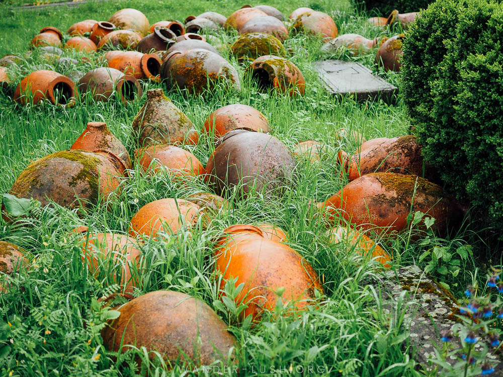
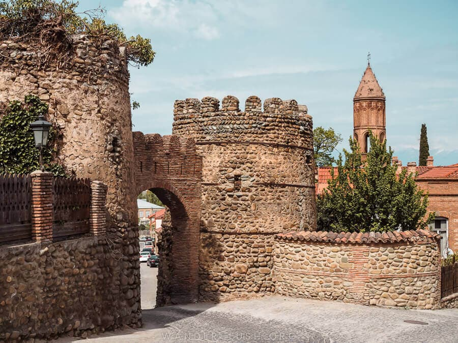
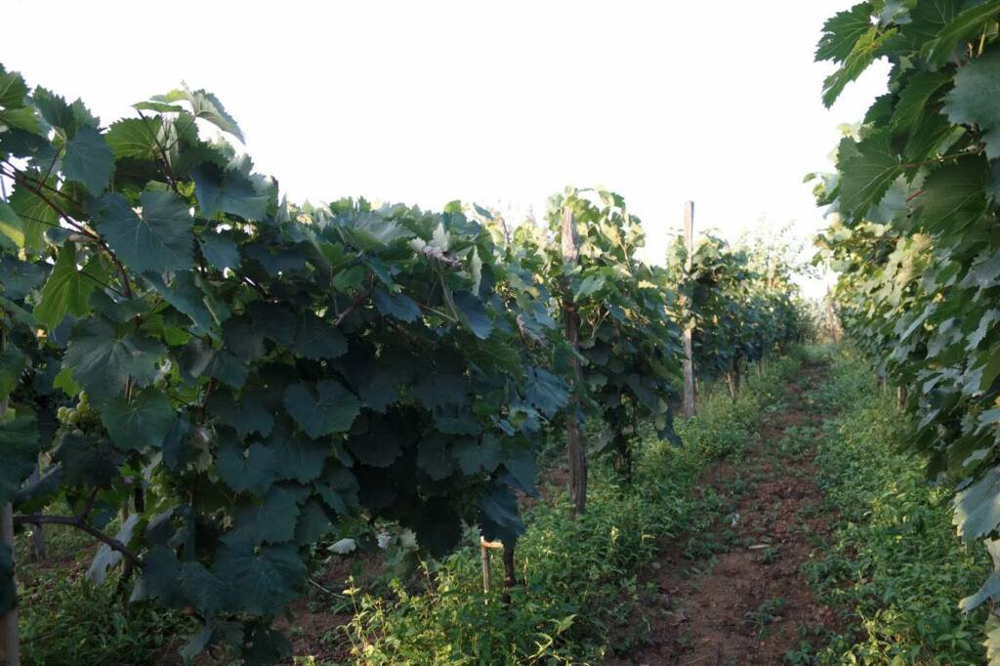

Kakheti is Georgia’s biggest region by area, taking in the entire eastern part of the country. The landscape and climate varies dramatically from the high mountains of Tusheti in the north to the semi-desert landscapes of Udabno and Vashlovani in the south. In between, the Alazani river and its wide valley cut through from north to south, carving out dozens of different microclimates that in turn provide the perfect conditions for cultivating grapes. Georgia has more than 400 endemic varieties in total, many of which grow (or once grew) in fertile Kakheti. Today, this remains Georgia’s premier wine region, responsible for around 70% of the country’s harvest. Archaeological evidence dates Georgia’s winemaking tradition back to the 6th millennium BC, predating the earliest wine production in France by more than 5,000 years. Wineries in Kakheti continue to live out this legacy.
They vary from tiny family operations that stick to time-honoured natural winemaking methods all the way through to large commercial wineries that employ a mix of Qvevri and European-style techniques. Clay Qvevri jars scattered amongst tall green grass. Old Qvevris on the grounds of Ikalto Monastery outside Telavi, Kakheti. Aside from vineyards, Kakheti is known for its medieval monasteries and hilltop churches, many of which date back to the 5th or 6th century when Kakheti was its own self-governed kingdom. Wine cellars feature prominently in some of the oldest and most revered, including Alaverdi and the cave monasteries of David Gareja in southern Kakheti. Wine and religion are closely intertwined, with some of the country’s best-loved vintages bottled by monks. Winemaking, toasting and drinking are all tied inextricably to the nation’s history, folklore and religion. When you visit Kakheti, not only do you get to taste Georgian wine, you also get to immerse yourself completely in these cultural elements. This makes Kakheti a must-visit in my books. Some travellers only have time for a quick day trip from Tbilisi to Kakheti. If your Georgia itinerary allows, I highly recommend a longer sojourn in wine country. Three days is the perfect amount of time.
Imereti is a historical-geographical part of Georgia with very rich wine culture and heritage. You can even observe historical records about Imereti wines from the XVII-XVIII centuries. Imereti is right behind Kakheti in most of the wine production indicators and it is really necessary to understand the connection between these two wine regions as essential, as they produce two completely different characteristic wines. These two wine regions complement each other incredibly well and together they form a harmonious portrait of Georgian winemaking. Together Kakheti, with its strength and constancy, and, Imereti, with its elegance and energy, create Georgia’s wine profile.
